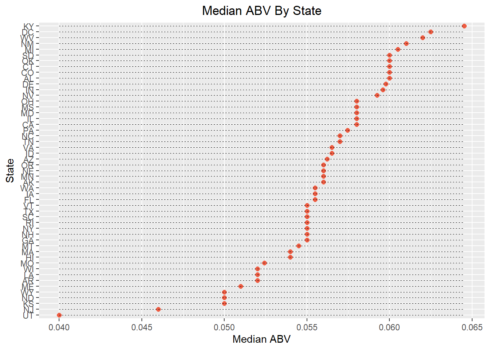
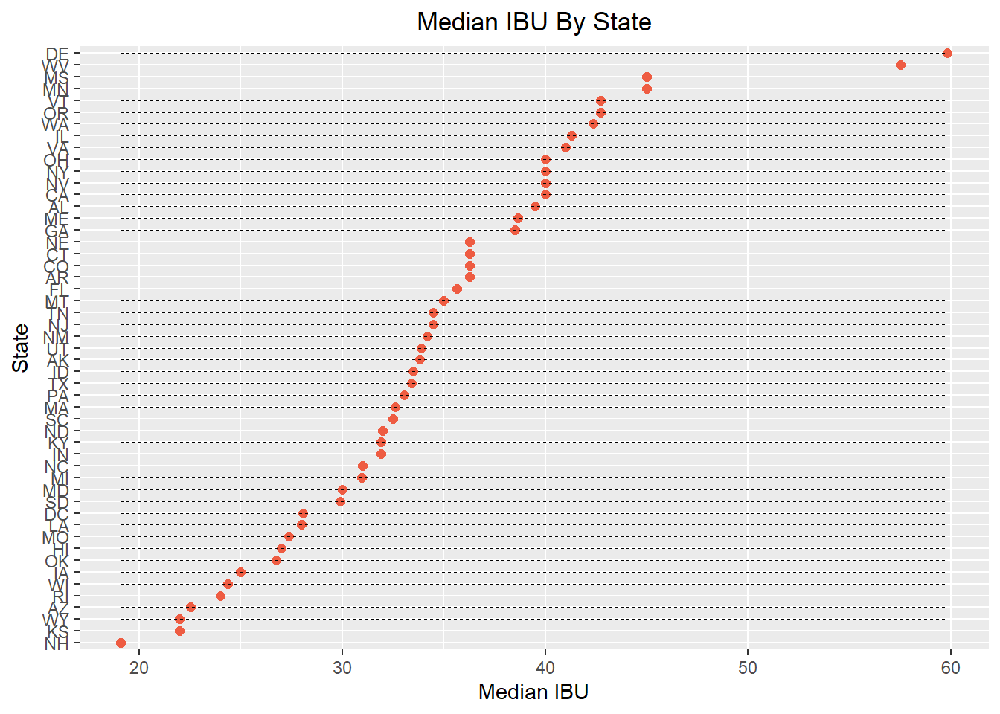
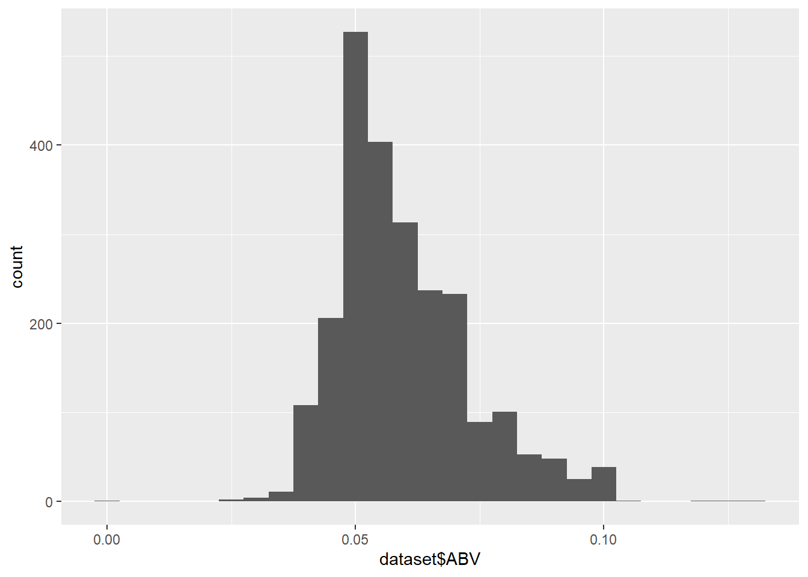

Case Study 1
Justin Cleveland
Introduction
Our goal is to provide any interesting or useful insights gained from the analysis of the beer and brewery data provided by Budweiser. In exploring the beer data we will analyze variables including ABV (alcohol content by volume), IBU (International Bitterness Units), the brewer, brewery location, beer style, and the volume in ounces of the beer of interest in order to find interesting correlations. We have found numerous insights about beer preferences across the country and the differences between the various beer styles using both KNN and logistic regression classifiers. Our findings are presented below.
Load required R Libraries
library(ggplot2)
library(plyr)
library(tidyverse)
library(GGally)
library(caret)
library(class)
library(e1071)
library(httr)
library(RCurl)Analysis Questions
Question 1
How many breweries are present in each state?
Code below will read data, summarize, and then plot a barchart of the results.
# Read in brewery data
brewery_data = read.csv(text=getURL("https://raw.githubusercontent.com/JustinCleveland/JustinCleveland.github.io/master/Breweries.csv"), header = TRUE, na.strings =c('', 'NA'))
# Create an object that counts breweries by state, to be used for reordering data
state_counts = data.frame(table(brewery_data$State))
colnames(state_counts) = c("State", "Freq")
state_counts = state_counts[order(state_counts$Freq),]
# Plot the ordered results
state_counts %>% ggplot(aes(x = reorder(State, Freq), y = Freq)) +
geom_bar(stat = 'identity') +
coord_flip() +
ggtitle('Number of Breweries by State') +
ylab('Count') +
xlab('State')This creates a heatmap for the number of breweries in each state. The number of breweries is plotted in the center of each state.
library(ggplot2)
library(maps)
library(dplyr)
library(mapproj)
# Create dataframe with state information and change column names to merge
new_brewery_data = brewery_data
lookup = data.frame(abb = state.abb, State = state.name)
colnames(new_brewery_data)[4] = "abb"
brewery_data2 = merge(new_brewery_data,lookup, by ="abb", all.x = TRUE, no.dups = F)
brewery_data2 = brewery_data2[!brewery_data2$abb == ' DC',]
levels(brewery_data2$State) = levels(lookup$State)
levels(lookup$abb) = levels(brewery_data2$abb)
for (row in 1:nrow(brewery_data2)){
abb = as.character(brewery_data2$abb[row])
abb = trimws(abb)
brewery_data2$State[row] = state.name[which(state.abb == abb)]
}
# Count breweries in each state and manipulate variables to match states dataframe
NumBreweryMapData = count(brewery_data2, State)
colnames(NumBreweryMapData)[2] = "Breweries"
NumBreweryMapData$region <- tolower(NumBreweryMapData$State)
NumBreweryMapData2 = NumBreweryMapData[-1]
states <- map_data("state")
map.df <- merge(states,NumBreweryMapData2, by="region", all.x=T)
map.df <- map.df[order(map.df$order),]
# Get rough location of middle of each state to plot number of breweries overtop of the states
tibble = map.df %>% group_by(region) %>% summarise(midlat = mean(c(max(lat), min(lat))), midlong = mean(c(max(long), min(long))))
for (row in 1:nrow(map.df)){
region = map.df$region[row]
midlat = tibble[tibble$region == region,]$midlat
midlong = tibble[tibble$region == region,]$midlong
map.df$midlat[row] = midlat
map.df$midlong[row] = midlong
}
ggplot(map.df, aes(x=long,y=lat,group=group)) +
geom_polygon(aes(fill=Breweries)) +
geom_path() +
scale_fill_gradientn(colours=rev(heat.colors(10)),na.value="grey90") +
ggtitle("Number of Breweries in Each State") +
coord_map() +
geom_text(label = map.df$Breweries, x = map.df$midlong, y = map.df$midlat) +
theme(plot.title = element_text(hjust = 0.5))
Conclusion
The top 10 states account for over 50% of all breweries nationwide. What makes these states so attractive is a combination of factors. The top 10 states have some of the lowest excise taxes on beer nationwide, some of the largest 21 and older populations in the country, and some of the highest median incomes in the country. Others, like Colorado, have a long tradition of brewing, thanks to the gold rush and Coors, creating a peculiar brewing culture that exploded when home-brewing was legalized in 1979.
Question 2
Merge beer data with the breweries data. Print the first and last 6 observations to check the merged file.
Code below reads and merges datasets such that each brewery will now contain produced beer It will then print the first and last 6 observations to verify that it worked correctly.
# Read in Beer data and merge with brewery data
beer_data = read.csv(text=getURL("https://raw.githubusercontent.com/JustinCleveland/JustinCleveland.github.io/master/Beers.csv"), header = TRUE, na.strings = c('', 'NA'))
dataset = merge(brewery_data, beer_data, by.x = 'Brew_ID', by.y = 'Brewery_id', all = TRUE)
# Print first and last 6 observations
dataset[1:6,]
tail(dataset, 6)Question 3
Address the missing values in each column (ABV and IBU).
Code below removes any beers with a missing style (5 observations are removed), then calculates the average ABV and IBU for each style of beer, and assigns the missing values with the calculated average
# Remove beers missing values for Style
dataset = dataset[!is.na(dataset$Style),]
# Calculate average values for ABV and IBU and store in a dataframe
avg_abv = dataset %>% group_by(Style) %>% summarize(meanABV = mean(ABV, na.rm = TRUE))
avg_abv = as.data.frame(avg_abv)
grand_mean_abv = dataset %>% summarize(grand_mean_abv = mean(ABV, na.rm = TRUE))
grand_mean_ibu = dataset %>% summarize(grand_mean_ibu = mean(IBU, na.rm = TRUE))
avg_ibu = dataset %>% group_by(Style) %>% summarize(meanibu = mean(IBU, na.rm = TRUE))
avg_ibu = as.data.frame(avg_ibu)
# Replace missing average IBU's with grand mean IBU in IBU dataframe
avg_ibu$meanibu = ifelse(is.na(avg_ibu$meanibu), grand_mean_ibu, avg_ibu$meanibu)
# Replace missing ABV's and IBU's in full dataset with averages by Style
for (row in 1:nrow(dataset)){
if(is.na(dataset[row, 'ABV'])){
dataset[row, 'ABV'] = avg_abv[avg_abv$Style == dataset$Style[row],]$meanABV[1]
}
if(is.na(dataset[row, 'IBU'])){
dataset[row, 'IBU'] = avg_ibu[avg_ibu$Style == dataset$Style[row],]$meanibu[1]
}
}The missing values were filled in with as meaningful data as possible with the given dataset. The average alcohol content and bitterness rating was calculated for each style of beer. Any beers of that style with a missing value was given the average for that style. This required removing the few cases of beers with missing styles (5), since these could not contribute meaningfully to the averages.
Question 4
Compute the median alcohol content and IBU for each state. Plot a bar chart to compare.
This code computes the median ABV and IBU by state, and then prints the state with the highest median ABV and IBU. It also creates a median dataframe, that is used for a heatmap. The state with the highest median ABV is Kentucky, that with the highest median IBU is Delaware.
# Find and display median values
median_abv = dataset %>% group_by(State) %>% summarize(medianABV = median(ABV))
median_abv = as.data.frame(median_abv)
median_ibu = dataset %>% group_by(State) %>% summarize(medianIBU = median(IBU))
median_ibu = as.data.frame(median_ibu)
# Determine which observation has maximum values and output the state
median_abv$State[which.max(median_abv$medianABV)] # Kentucky
median_abv$medianABV[which.max(median_abv$medianABV)]
median_ibu$State[which.max(median_ibu$medianIBU)] # Delaware
median_ibu$medianIBU[which.max(median_ibu$medianIBU)]
median_data = merge(median_abv, median_ibu, by = 'State')This creates a bar chart for median ABV and IBU for each state.
median_abv %>% ggplot(aes(x = reorder(State, medianABV, fun = median), y = medianABV)) +
geom_point(col = 'tomato2', size = 2) +
geom_segment(aes(x = median_abv$State,
xend = State,
y = min(median_abv$medianABV),
yend = max(median_abv$medianABV)),
linetype = 'dashed',
size = 0.1) +
coord_flip() +
ggtitle('Median ABV By State') +
xlab('State') + ylab('Median ABV') +
theme(plot.title = element_text(hjust = 0.5))
median_ibu %>% ggplot(aes(x = reorder(State, medianIBU, fun = median), y = medianIBU)) +
geom_point(col = 'tomato2', size = 2) +
geom_segment(aes(x = median_ibu$State,
xend = State,
y = min(median_ibu$medianIBU),
yend = max(median_ibu$medianIBU)),
linetype = 'dashed',
size = 0.1) +
coord_flip() +
ggtitle('Median IBU By State') +
xlab('State') + ylab('Median IBU') +
theme(plot.title = element_text(hjust = 0.5))
This plots the median ABV and IBU by state on a heatmap for an easy-to-read summary of the data.
library(ggplot2)
library(maps)
library(dplyr)
library(mapproj)
# Create dataframe with state information and change column names to merge
lookup = data.frame(abb = state.abb, State = state.name)
colnames(median_data)[1] = "abb"
median_data2 = merge(median_data,lookup, by ="abb", all.x = TRUE, no.dups = F)
median_data2 = median_data2[!median_data2$abb == ' DC',]
levels(median_data2$State) = levels(lookup$State)
levels(lookup$abb) = levels(median_data2$abb)
for (row in 1:nrow(median_data2)){
abb = as.character(median_data2$abb[row])
abb = trimws(abb)
median_data2$State[row] = state.name[which(state.abb == abb)]
}
median_data2$region <- tolower(median_data2$State)
states <- map_data("state")
map.df <- merge(states,median_data2, by="region", all.x=T)
map.df <- map.df[order(map.df$order),]
map.df$Percent = map.df$medianABV * 100
ggplot(map.df, aes(x=long,y=lat,group=group)) +
geom_polygon(aes(fill=Percent)) +
geom_path() +
scale_fill_gradientn(colours=rev(rainbow(10)),na.value="grey90") +
ggtitle("Median ABV in Each State") +
coord_map() +
theme(plot.title = element_text(hjust = 0.5)) +
labs(fill = 'ABV (%)')ggplot(map.df, aes(x=long,y=lat,group=group)) +
geom_polygon(aes(fill=medianIBU)) +
geom_path() +
scale_fill_gradientn(colours=rev(rainbow(10)),na.value="grey90") +
ggtitle("Median IBU in Each State") +
coord_map() +
theme(plot.title = element_text(hjust = 0.5)) +
labs(fill = 'IBU Rating')Conclusion
The majority of the country has a median alcohol content of about 5.5% for beers, with notable exceptions being Kentucky (6.4%) and West Virginia (6.2%), and Utah (~4%). Kentucky is world famous for their bourbon whiskey, and this influences their beer production. Kentucky craft beer is often aged in whiskey barrels, which can can increase the ABV due to the residual whiskey, as well as allowing some water to evaporate.
Utah has much stricter laws regulating alcohol due to the high concentration of Mormon’s and their beliefs regarding alcohol.
A rough national median IBU rating is between 30-40, with Delaware having the highest (60), and West Virginia close behind at 57. Delaware and West Virginia are much higher than the rest of the nation because they have far fewer breweries than most states, but are following the national trend of brewing bitter IPA’s and pale ales. The median bitterness rating is much lower in the midwest than elsewhere in the country. This is due to the preference for ales over more bitter beer styles in this region. We will discuss this later in our analysis (question 9).
Question 5
Which state has the most alcoholic beer, and which has the most bitter beer?
The following code determines which states have the highest beer ABV and IBU, and prints them out. The state with the highest ABV beer is Colorado (12.8%), and the state with the highest IBU is Oregon (138).
state_maxABV = dataset$State[which.max(dataset$ABV)]
state_maxIBU = dataset$State[which.max(dataset$IBU)]
state_maxABV # Colorado
dataset$ABV[which.max(dataset$ABV)]
state_maxIBU # Oregon
dataset$IBU[which.max(dataset$IBU)]
max_abv = dataset %>% group_by(State) %>% summarize(maxABV = max(ABV))
max_abv = as.data.frame(max_abv)
max_ibu = dataset %>% group_by(State) %>% summarize(maxIBU = max(IBU))
max_ibu = as.data.frame(max_ibu)
max_data = merge(max_abv, max_ibu, by = 'State')This creates a bar chart for maximum ABV and IBU for each state.
max_abv %>% ggplot(aes(x = reorder(State, maxABV, fun = median), y = maxABV)) +
geom_point(col = 'tomato2', size = 2) +
geom_segment(aes(x = max_abv$State,
xend = State,
y = min(max_abv$maxABV),
yend = max(max_abv$maxABV)),
linetype = 'dashed',
size = 0.1) +
coord_flip() +
ggtitle('Max ABV By State') +
xlab('State') + ylab('Max ABV') +
theme(plot.title = element_text(hjust = 0.5))
max_ibu %>% ggplot(aes(x = reorder(State, maxIBU, fun = median), y = maxIBU)) +
geom_point(col = 'tomato2', size = 2) +
geom_segment(aes(x = max_ibu$State,
xend = State,
y = min(max_ibu$maxIBU),
yend = max(max_ibu$maxIBU)),
linetype = 'dashed',
size = 0.1) +
coord_flip() +
ggtitle('Max IBU By State') +
xlab('State') + ylab('Max IBU') +
theme(plot.title = element_text(hjust = 0.5))
This code creates a heatmap for the max ABV and IBU for beer in each state.
# Manipulate variable names to enable merging dataframes
lookup = data.frame(abb = state.abb, State = state.name)
colnames(max_data)[1] = "abb"
max_data2 = merge(max_data,lookup, by ="abb", all.x = TRUE, no.dups = F)
max_data2 = max_data2[!max_data2$abb == ' DC',]
levels(max_data2$State) = levels(lookup$State)
levels(lookup$abb) = levels(max_data2$abb)
for (row in 1:nrow(max_data2)){
abb = as.character(max_data2$abb[row])
abb = trimws(abb)
max_data2$State[row] = state.name[which(state.abb == abb)]
}
max_data2$region <- tolower(max_data2$State)
states <- map_data("state")
# Merge dataframes
map.df <- merge(states,max_data2, by="region", all.x=T)
map.df <- map.df[order(map.df$order),]
map.df$Percent = map.df$maxABV * 100
ggplot(map.df, aes(x=long,y=lat,group=group)) +
geom_polygon(aes(fill=maxABV)) +
geom_path() +
scale_fill_gradientn(colours=rev(rainbow(10)),na.value="grey90") +
ggtitle("Max ABV in Each State") +
coord_map() +
theme(plot.title = element_text(hjust = 0.5)) +
labs(fill = 'ABV (%)')ggplot(map.df, aes(x=long,y=lat,group=group)) +
geom_polygon(aes(fill=maxIBU)) +
geom_path() +
scale_fill_gradientn(colours=rev(rainbow(10)),na.value="grey90") +
ggtitle("Max IBU in Each State") +
coord_map() +
theme(plot.title = element_text(hjust = 0.5)) +
labs(fill = 'IBU Rating')The state with the highest alcohol content beer is Colorado (12.8%) with Kentucky in second at 12.5%. These two states highest ABV beers far exceed the closest states, because they don’t have regulatory limits on the maximum ABV content like the 13 states with a limit of (10%) as seen in the bar plot above.
Conclusion
The state with the most bitter beer is Oregon (138 IBU) with Virginia in second at 135. It is interesting to note that Utah does not have the weakest maximum ABV beer given their alcohol laws, but that Arkansas and Tennesse have the weakest maximum ABV beer and lowest maximum IBU. Since these states have no prohibitions on alcohol content, and are not particularly tough on brewers, this must be due to personal preference.
Question 6
Conclusion
The most common ABV is about 5-5.5%, but there is a niche market for beers with higher ABV’s in the range of 6-10%. Since most people do not buy a beer because of its alcohol content, this is an interesting revelation that warrants further investigation. The plots of popular beers show that many of the most popular beers have a bitterness rating well above the national median. This relationship is explored further.
Question 7
Is there an apparent relationship between beer bitterness and alcohol content?
This code creates a scatterplot of ABV vs IBU for all beers.
dataset %>% ggplot(aes(x = ABV * 100, y = IBU)) +
geom_point(position = 'jitter') +
stat_smooth(method = 'lm', se = FALSE) +
ggtitle("Relationship Between IBU and ABV") +
theme(legend.position = 'none', plot.title = element_text(hjust = 0.5)) +
xlab('ABV (%)')Findings
There does seem to be a general positive relationship between alcohol content and bitterness, but the divergeance from the model at higher ABV levels indicate that there are other factors at play. The beers were divided into IPAs and ales and the relationship was explored again.
This code explores the ABV-IBU relationship of specific beer styles (IPA’s and Ales) to get more insights into the relationship, which appears more complicated than initially thought. The two styles analyzed display different relationships.
# Create datasets for IPA's and Ales, remove any IPA's that are in ale dataset. Condense beers into 2 styles, IPA and Ale, then combine into a single dataframe
ipa_dataset = dataset %>% filter(grepl('.*IPA.*', dataset$Style))
ale_dataset = dataset %>% filter(grepl('.*Ale.*', dataset$Style))
ale_dataset = ale_dataset %>% filter(!grepl('.*IPA.*', ale_dataset$Style))
ipa_dataset$Style = c('IPA')
ale_dataset$Style = c('Ale')
ipa_ale_dataset = rbind(ipa_dataset, ale_dataset)
ipa_ale_dataset %>% ggplot(aes(x = ABV * 100, y = IBU, color = Style)) +
geom_point(position = 'jitter') +
ggtitle('Alcohol Content vs Bitterness') +
scale_color_manual(values = c('red', 'blue')) +
theme(plot.title = element_text(hjust = 0.5)) +
stat_smooth(method = 'lm', se = FALSE) +
xlab('ABV (%)')Conclusion
When the beers were divided into IPAs and ales different relationships were noticed. While they both are positive, they are different enough to indicate that they may not be directly correlated, and that beer style may determine the relationship between ABV and IBU.
Question 8
Investigate the difference with respect to IBU and ABV between IPAs and all other Ales (excluding IPA’s). Use KNN. May supplement with other approaches.
This code creates a subset of the data containing only IPA’s and all other Ales combined in a common ‘Ale’ group, then splits this subset into a training set and a test set.
# Filter into two groups: IPA and Ale
ipa_dataset = dataset %>% filter(grepl('.*IPA.*', dataset$Style))
ale_dataset = dataset %>% filter(grepl('.*Ale.*', dataset$Style))
ale_dataset = ale_dataset %>% filter(!grepl('.*IPA.*', ale_dataset$Style))
ipa_dataset$Style = c('IPA')
ale_dataset$Style = c('Ale')
ipa_ale_dataset = rbind(ipa_dataset, ale_dataset)
splitpercent = .70
trainIndices = sample(1:dim(ipa_ale_dataset)[1], round(splitpercent * dim(ipa_ale_dataset)[1]))
train = ipa_ale_dataset[trainIndices,]
test = ipa_ale_dataset[-trainIndices,]This code iterates through multiple dataset samples and k-values to estimate the optimum K-value (k = 5). This will allow us to fit the best possible model for the given data.
iterations = 100
numks = 30
masteracc = matrix(nrow = iterations, ncol = numks)
splitpercent = .70
for(j in 1:iterations)
{
accs = data.frame(accuracy = numeric(numks), k = numeric(numks))
trainIndices = sample(1:dim(ipa_ale_dataset)[1], round(splitpercent * dim(ipa_ale_dataset)[1]))
train = ipa_ale_dataset[trainIndices,]
test = ipa_ale_dataset[-trainIndices,]
for (i in 1:numks)
{
classifications = knn(train[,c(7,8)],test[,c(7,8)],train$Style, prob = TRUE, k = i)
tab = table(classifications,test$Style)
CM = confusionMatrix(tab)
masteracc[j,i] = CM$overall[1]
}
}
MeanAcc = colMeans(masteracc)
plot(seq(1,numks,1), MeanAcc, type = 'l')This code runs the classifier model and outputs the performance metrics of the model. The model selected was the K-NN model with k = 5. The model selects the 5 closest beers, in terms of ABV and IBU, to each beer in the test set, and assigns the majority style to the beer in question.
classifications = knn(train[,c(7,8)],test[,c(7,8)],train$Style, prob = TRUE, k = 5)
CM = confusionMatrix(table(test$Style,classifications))
CM## Confusion Matrix and Statistics
##
## classifications
## Ale IPA
## Ale 270 26
## IPA 27 137
##
## Accuracy : 0.8848
## 95% CI : (0.852, 0.9125)
## No Information Rate : 0.6457
## P-Value [Acc > NIR] : <2e-16
##
## Kappa : 0.7485
##
## Mcnemar's Test P-Value : 1
##
## Sensitivity : 0.9091
## Specificity : 0.8405
## Pos Pred Value : 0.9122
## Neg Pred Value : 0.8354
## Prevalence : 0.6457
## Detection Rate : 0.5870
## Detection Prevalence : 0.6435
## Balanced Accuracy : 0.8748
##
## 'Positive' Class : Ale
## This model had a very high accuracy of ~ 90%, but it may not be the best model. We decided to try a leave-one out cross validation model to get better results.
This code runs a Leave one out cross validation model over multiple data samples and k-values to determine the optimum K (k = 5 is optimum). This model is similar to the previous one, but utilizes the entire dataset to train instead of 70% of the data.
accs = data.frame(accuracy = numeric(90), k = numeric(90))
for (i in 1:90)
{
classifications = knn.cv(ipa_ale_dataset[,c(7,8)], ipa_ale_dataset$Style, prob = TRUE, k = i)
CM = confusionMatrix(table(classifications, ipa_ale_dataset$Style))
accs$accuracy[i] = CM$overal[1]
accs$k[i] = i
}
plot(accs$k, accs$accuracy, type = 'l', xlab = 'k')Now we run our model to determine the performance metrics for the new model. This model achieves slightly better accuracy than the previous model, since it uses more data to train the model.
classifications = knn.cv(ipa_ale_dataset[,c(7,8)], ipa_ale_dataset$Style, prob = TRUE, k = 5)
CM = confusionMatrix(table(classifications, ipa_ale_dataset$Style))
CM## Confusion Matrix and Statistics
##
##
## classifications Ale IPA
## Ale 895 64
## IPA 68 507
##
## Accuracy : 0.914
## 95% CI : (0.8988, 0.9275)
## No Information Rate : 0.6278
## P-Value [Acc > NIR] : <2e-16
##
## Kappa : 0.8161
##
## Mcnemar's Test P-Value : 0.794
##
## Sensitivity : 0.9294
## Specificity : 0.8879
## Pos Pred Value : 0.9333
## Neg Pred Value : 0.8817
## Prevalence : 0.6278
## Detection Rate : 0.5834
## Detection Prevalence : 0.6252
## Balanced Accuracy : 0.9087
##
## 'Positive' Class : Ale
## This model performed slightly better than the previous, with an accuracy consistently above 90%. The results of this model can now be visualized to gain insights from the data.
This creates a dataframe that stores the performance metrics of our KNN model, to be used to analyze the results. It includes the model classifications, probabilities, the beer’s true style, ABV, and IBU.
class_df = data.frame('classification' = classifications)
probability = attributes(classifications)[3][1]
probability = unlist(probability[1])
for (var in probability){
attr(probability, 'names') <- NULL
}
class_df = cbind(class_df, probability)
class_df = cbind(ipa_ale_dataset$Style, class_df, ipa_ale_dataset$ABV, ipa_ale_dataset$IBU)
names(class_df) = c('Truth', 'Classification', 'Probability', 'ABV', 'IBU')
class_df$Correct = ifelse(class_df$Truth == class_df$Classification, 'Correct Prediction', 'Incorrect Prediction')
class_df$Correct = ordered(class_df$Correct, levels = c("Incorrect Prediction", "Correct Prediction"))
class_df$Numeric = ifelse(class_df$Truth == 'IPA', 1, 0)
class_df$AleProb = ifelse(class_df$Classification == 'Ale', class_df$Probability, 1 - class_df$Probability)Create a 3D plot Comparing ABV and IBU to the probability of being an Ale colored by the models prediction accuracy. This demonstrates that the probability of being an Ale is not affected by ABV, but shows a significant visual correlation between IBU and probability of being an Ale. The model errors are fairly evenly distributed across IBU and ABV indicating a complex relationship that is not fully captured by these two variables.
library(plotly)
class_df$`Ale Probability`= class_df$AleProb * 100
model_plot <- plot_ly(class_df, x = ~ABV, y = ~IBU, z = ~`Ale Probability`, color = ~Correct, colors = 'Set1')
model_plot <- model_plot %>% add_markers()
model_plot <- model_plot %>% layout(title = 'Predicted Style By ABV and IBU', scene = list(xaxis = list(title = 'ABV'),
yaxis = list(title = 'IBU'),
zaxis = list(title = 'Probability of Being an Ale (%)')))
model_plotThe probability of being an ale decreases as the the IBU rating increases indicating correlation. No such correlation exists with ABV. This same information is plotted below in 2 dimensions for clarity.
Create 2D scatterplots of probability of being an ale vs ABV and probability of being an ale vs IBU colored by the beer’s style (this is the same informtion shown in the 3D plot above). This is a simplified view that confirms that IBU and the probability of being an ale are correlated, while ABV and probability of being an ale are not.
class_df$`Ale Probability` = class_df$AleProb * 100
class_df %>% ggplot(aes(x = ABV * 100, y = `Ale Probability`, color = Truth)) +
geom_point(position = 'jitter') +
ggtitle('Predicted Style Probabilities (ABV)') +
scale_color_manual('True Style', values = c('red', 'blue')) +
ylab('Probability of Being an Ale (%)') +
theme(plot.title = element_text(hjust = 0.5)) +
xlab('ABV (%)')class_df %>% ggplot(aes(x = IBU, y = `Ale Probability`, color = Truth)) +
geom_point(position = 'jitter') +
ggtitle('Predicted Style Probabilities (IBU)') +
scale_color_manual('True Style', values = c('red', 'blue')) +
ylab('Probability of Being an Ale (%)') +
theme(plot.title = element_text(hjust = 0.5))Create a 2D plot of ABV vs IBU colored by model correctness. This shows that most errors occur in a middle IBU range of ~45-75, indicating that this range may be thought of as a boundary between IPA’s and ales.
class_df %>% ggplot(aes(x = IBU, y = ABV * 100, color = Correct)) +
geom_point(position = 'jitter') +
ggtitle('KNN Model Performance') +
scale_color_manual('Model Performance', values = c('red', 'blue')) +
theme(plot.title = element_text(hjust = 0.5)) +
ylab('ABV (%)')A logistic regression classifier was trained in order to determine the statistical significance of the relationships between beer style and IBU and ABV
Create training and test sets
library(ISLR)
library(gridExtra)
ipa_ale_dataset$Style = as.factor(ipa_ale_dataset$Style)
splitpercent = .70
trainIndices = sample(1:dim(ipa_ale_dataset)[1], round(splitpercent * dim(ipa_ale_dataset)[1]))
ipa_ale_train = ipa_ale_dataset[trainIndices,]
ipa_ale_test = ipa_ale_dataset[-trainIndices,]Train and test logistic regression model and output its performance metrics. This model is capable of ascertaining the statistical significance of the relationships. It confirms our intuitions that IBU is significantly correlated to style, while ABV is not.
logistic_regression_model = glm(Style ~ ABV + IBU, family = binomial(link = 'logit'), data = ipa_ale_train)
summary(logistic_regression_model)##
## Call:
## glm(formula = Style ~ ABV + IBU, family = binomial(link = "logit"),
## data = ipa_ale_train)
##
## Deviance Residuals:
## Min 1Q Median 3Q Max
## -3.7574 -0.4390 -0.1891 0.5720 2.5762
##
## Coefficients:
## Estimate Std. Error z value Pr(>|z|)
## (Intercept) -5.750066 0.557478 -10.314 <2e-16 ***
## ABV -14.536075 10.297139 -1.412 0.158
## IBU 0.119593 0.007653 15.627 <2e-16 ***
## ---
## Signif. codes: 0 '***' 0.001 '**' 0.01 '*' 0.05 '.' 0.1 ' ' 1
##
## (Dispersion parameter for binomial family taken to be 1)
##
## Null deviance: 1435.7 on 1073 degrees of freedom
## Residual deviance: 688.0 on 1071 degrees of freedom
## AIC: 694
##
## Number of Fisher Scoring iterations: 6fitted.results = predict(logistic_regression_model, newdata = subset(ipa_ale_test, select = c(7, 8)), type = 'response')
log.probs = as.data.frame(fitted.results)$fitted.results
ipa_ale_test$Prob_IPA = log.probs
fitted.results = ifelse(fitted.results > 0.5, 'IPA', 'Ale')
misclass_error = mean(fitted.results != ipa_ale_test$Style)
print(paste('Accuracy is ', 1 - misclass_error))## [1] "Accuracy is 0.88695652173913"This model is less accurate than the previous cross validated model, but it has the benefit of providing hard statistical evidence to support our suspicions: that IBU is correlated with beer style, and ABV is not significantly correlated.
This plots the performance of the logistic regression model based on a beers ABV and IBU. This model confirms the previous IBU boundary between IPAs and ales as somewhere between ~45-75.
# Create dataframe of test set and model results
ipa_ale_test$Predicted_Style = fitted.results
ipa_ale_test$Correct = ifelse(ipa_ale_test$Style == ipa_ale_test$Predicted_Style, 'Correct Prediction', 'Incorrect Prediction')
ipa_ale_test %>% ggplot(aes(x = IBU, y = ABV * 100, color = Correct)) +
geom_point(position = 'jitter') +
ggtitle('Logistic Model Performance') +
scale_color_manual('Model Performance', values = c('blue', 'red')) +
theme(plot.title = element_text(hjust = 0.5)) +
ylab('ABV (%)')Plot 3D results of model performance with IPA Probability as the z axis. This shows that the probability of being an IPA increases as the IBU rating increases, while no such relationship exists with ABV. This confirms our previous models. The point at which the model considers a beer to be an IPA is at an IBU of ~ 55, indicating this to be a likely value for the cutoff IBU between IPAs and Ales.
library(plotly)
logmodel_plot <- plot_ly(ipa_ale_test, x = ~IBU, y = ~ABV, z = ~Prob_IPA *100, color = ~Correct, colors = c('blue', 'red'))
logmodel_plot <- logmodel_plot %>% add_markers()
logmodel_plot <- logmodel_plot %>% layout(title = 'Logistic Regression Model Performance Probability', scene = list(xaxis = list(title = 'IBU'),
yaxis = list(title = 'ABV'),
zaxis = list(title = 'Probability of Being an IPA (%)')))
logmodel_plotConclusion
To summarize: the difference between IPAs and ales are that IPAs tend to have a higher IBU rating than ales, while both styles of beers have the same range of ABVs. This was confirmed with multiple models.
Question 9
Find one other useful piece of information in the data. Convince them why it’s important and back it up.
We will determine which beer styles are popular across all 50 states. The most brewed beer in each state will be determined and plotted. This will give inight into which beers are in demand by location. This information can be very valuable for marketing or brewing purposes. The beer styles were condensed into 8 distinct groups that are sufficiently different to warrant its own grouping.
This code condenses beer styles into a few common types, such as: IPA, Ale, Pale Ale, Lager, Stout, Pilsner, Wheat Beer, and Porter. It then determines the most brewed beer by state, and plots a heat map
# Filter into multiple groups
ipa_dataset = dataset %>% filter(grepl('.*IPA.*', dataset$Style))
wheat_dataset = dataset %>% filter(grepl('.*Wheat.*', dataset$Style) | grepl('.*Hefeweizen.*', dataset$Style) | grepl('.*Witbier.*', dataset$Style))
ale_dataset = dataset %>% filter(grepl('.* Ale.*', dataset$Style))
ale_dataset = ale_dataset %>% filter(!grepl('.*IPA.*', ale_dataset$Style))
ale_dataset = ale_dataset %>% filter(!grepl('.* Pale.*', ale_dataset$Style))
ale_dataset = ale_dataset %>% filter(!grepl('.*Wheat*', ale_dataset$Style))
pale_ale_dataset = dataset %>% filter(grepl('.* Pale.*', dataset$Style))
pale_ale_dataset = pale_ale_dataset %>% filter(!grepl('.*IPA.*', pale_ale_dataset$Style))
lager_dataset = dataset %>% filter(grepl('.*Lager.*', dataset$Style))
stout_dataset = dataset %>% filter(grepl('.*Stout.*', dataset$Style))
pilsner_dataset = dataset %>% filter(grepl('.*Pilsner.*', dataset$Style))
porter_data = dataset %>% filter(grepl('.*Porter.*', dataset$Style))
ipa_dataset$Style = c('IPA')
ale_dataset$Style = c('Ale')
pale_ale_dataset$Style = c('Pale Ale')
lager_dataset$Style = c('Lager')
stout_dataset$Style = c('Stout')
pilsner_dataset$Style = c('Pilsner')
wheat_dataset$Style = c('Wheat Beer')
porter_data$Style = c('Porter')
styled_dataset = rbind(ipa_dataset, ale_dataset, pale_ale_dataset, lager_dataset, stout_dataset, pilsner_dataset, wheat_dataset, porter_data)
styled_dataset = styled_dataset[order(styled_dataset$State),]
styled_dataset$Style = as.factor(styled_dataset$Style)
styled_dataset$State = as.factor(styled_dataset$State)
# Find favorite beer in each state, and create a table containing the statistics.
beer_counts = styled_dataset %>% group_by(State) %>% count(Style)
beer_counts = beer_counts[with(beer_counts, order(beer_counts$State, -beer_counts$n)),]
beer_count_spread = spread(beer_counts, Style, n)
beer_count_spread[is.na(beer_count_spread)] = 0
# Save the data for dc before removing the DC observations. Necessary for heat map to work as written
beer_counts_dc = beer_counts
beer_counts = subset(beer_counts, beer_counts$State != ' DC')
row = 1
for (row in 1:nrow(beer_count_spread)){
beer_count_spread$Total[row] = sum(beer_count_spread[row ,2:9])
row = row + 1
}
favorites = data.frame(matrix('', ncol = 2, nrow = 50))
names(favorites) = c('State', 'Style')
levels(favorites$State) = levels(styled_dataset$State)
levels(favorites$Style) = levels(styled_dataset$Style)
favorites$State = max_data2$abb
favorites$Style = c(NA)
favorites$Style = as.factor(favorites$Style)
faclevels = addNA(levels(beer_counts$Style))
levels(favorites$Style) = faclevels
row =1
faverow = 1
for (row in 1:nrow(beer_counts)) {
state = beer_counts$State[row]
style = beer_counts$Style[row]
if(is.na(favorites[favorites$State == state,]$Style)) {
favorites$Style[faverow] = style
faverow = faverow + 1
}
row = row + 1
}
levels(favorites$Style) = levels(styled_dataset$Style)
# Create Heatmap of favorite beers by State
library(ggplot2)
library(maps)
library(dplyr)
library(mapproj)
# Create a dataframe containing state information and manipulate variables to merge dataframes later
lookup = data.frame(abb = state.abb, State = state.name)
colnames(favorites)[1] = "abb"
favorites2 = merge(favorites,lookup, by ="abb", all.x = TRUE, no.dups = F)
levels(favorites2$State) = levels(lookup$State)
levels(lookup$abb) = levels(favorites2$abb)
for (row in 1:nrow(favorites2)){
abb = as.character(favorites2$abb[row])
abb = trimws(abb)
favorites2$State[row] = state.name[which(state.abb == abb)]
}
favorites2$region <- tolower(favorites2$State)
states <- map_data("state")
map.df <- merge(states,favorites2, by="region", all.x=T)
map.df <- map.df[order(map.df$order),]
map.df$region <- as.factor(map.df$region)
row = 1
for (row in 1:nrow(map.df)) {
if (map.df$region[row] == 'district of columbia') {
map.df$Style[row] = 'Ale'
row = row + 1
}
}
# Plot the heatmap
ggplot(map.df, aes(x=long,y=lat,group=group)) +
geom_polygon(aes(fill=Style)) +
geom_path() +
ggtitle('Most Brewed Beer in Each State') +
coord_map() +
theme(plot.title = element_text(hjust = 0.5)) +
scale_fill_manual(values = c('red2', 'orange2', 'chartreuse3', 'blue3', 'cyan1', 'orchid', 'springgreen2', 'turquoise3'), drop = FALSE)
Conclusion
The most noticeable trend is the popularity of ales in the midwest, and of IPAs on the west coast and in New England. It should be noted that the most brewed style by region is likely indicative of local preferences, since microbreweries tend to have smaller distribution zones than large brewers. This map provides valuable information for targeted marketing for beer products, as well as an indication of what types of beers should be created based on brewery location.
Summary
There were many valuable insights gained from the data provided by Budweiser. The distribution of breweries across the country is affected both by population demographics and the legal aspects of alcohol brewing and distribution. The strength of beers is also to some extent determined by law, and local preference, while the bitterness of local beers are determined almost wholly by local preference and new trends. These trends have been determined and summarized above, which can aid in targeted marketing for specific beers, or for consideration in creating new brews. A definite distinction was found between IPAs and ales, based solely on IBU rating. While IPAs tend to have a higher IBU rating than other ales, there is no such distinction in terms of alcohol content.
Comment on the summary statistics and distribution of ABV
This will calculate the summary statistics of ABV for all beers
This plots overall distribution of ABV in a histogram.

This code selects only popular beer styles (n > 75), then plots histograms of the ABV and IBU’s by style.